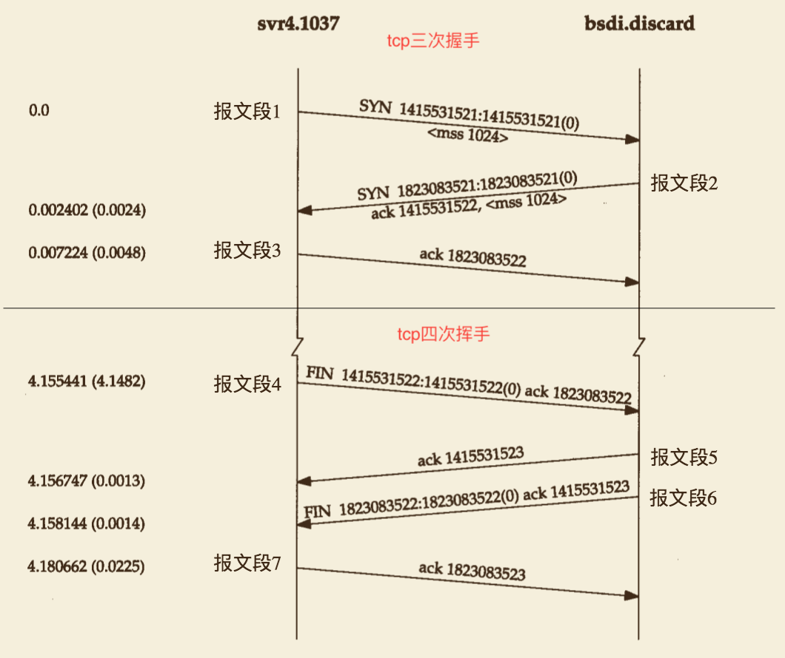

网络相关知识，http，tcp等等。
pc一次请求的流程
- 根据域名找服务器ip，首先根据host判断，如果host存在，直接使用该ip。
- 如果host不存在，走dns服务器，电脑配置的dns，如果没有配置走默认的dns，一般是运营商的dns服务器。
- 通过dns找到ip，访问ip，进行tcp握手等操作。
tcp连接

tcp的三次握手,四次挥手udp连接
tcp和udp的区别
tcp是有状态的连接，性能低
udp是无状态的连接，性能高
http状态码详解
500: 服务异常 501: 服务器还是不具有请求功能的 502: 服务器上的一个错误网关 503: 服务不可用的一种状态 504: 网管超时
404: 未找到相应服务 403: 401:
301: 永久性 302: 暂时性
200: ok 201: 202:
http和https的区别？
websocket如何握手升级？
https认证过程
http2协议
http2和http1的区别
参考《tcp-ip详解》，《http权威指南》